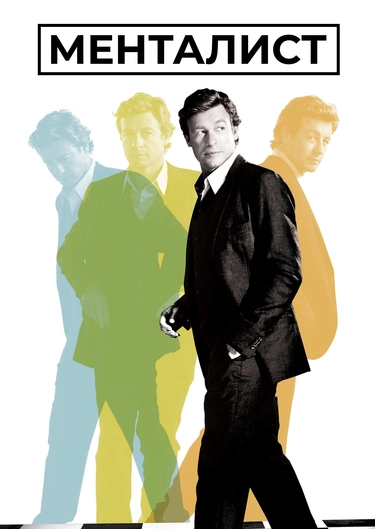
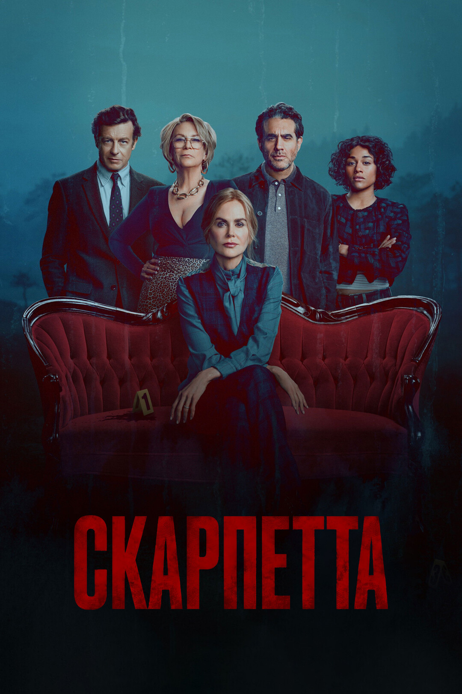
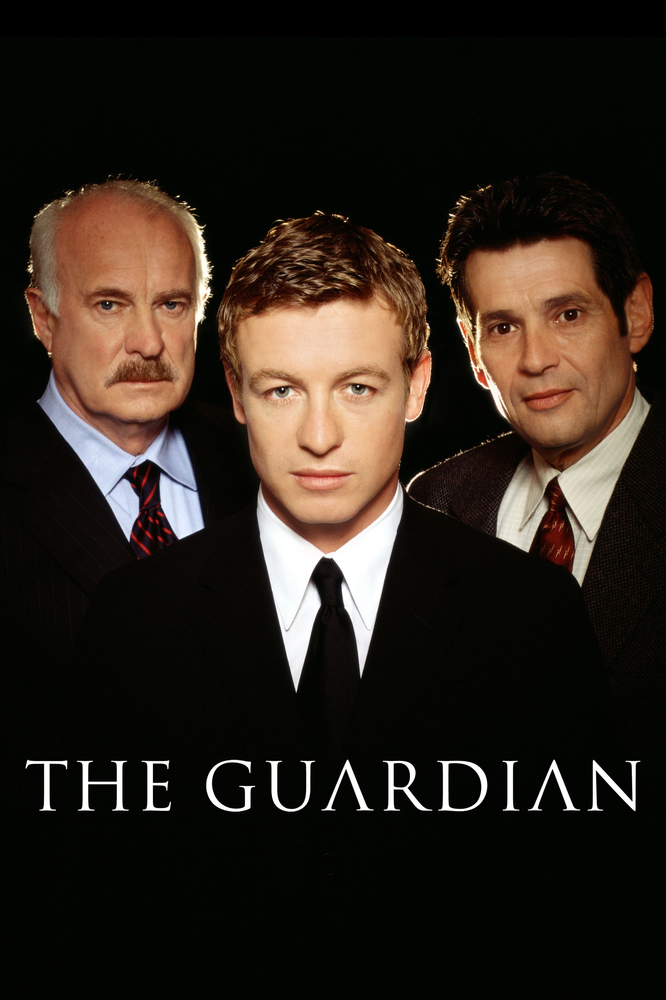

Добірка найяскравіших робіт та ролей Саймона Бейкера в кіно й на телебаченні
(натисніть на фільм, щоб переглянути на IMDb):

Роль Патріка Джейна — геніального консультанта та менталіста, який допомагає поліції розкривати злочини.

Масштабний телевізійний проєкт за знаменитими романами Патриції Корнуелл разом із зірковим акторським складом.

Культова мелодрама, де Бейкер зіграв чарівного письменника Крістіана Томпсона.

Головна роль корпоративного адвоката Ніка Фелліна, приреченого на громадські роботи.

«Секрети Лос-Анджелеса» (1997)
Оскароносний неонуарний триллер, який відкрив Бейкеру двері у велике голлівудське кіно.

Драматичний фільм про серфінг, де Саймон Бейкер виступив не лише як актор, а й як режисер.